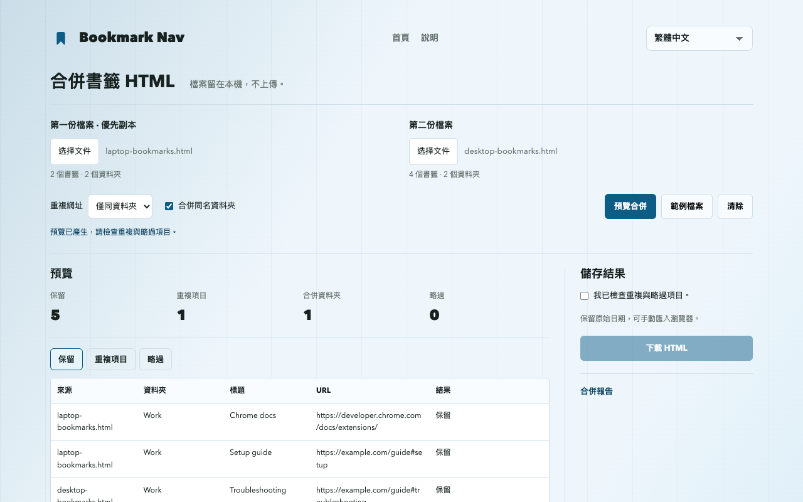

如何合併 Chrome 匯出的書籤 HTML 檔案
合併兩份 Chrome 書籤匯出時，選擇兩個 HTML 檔案、預覽重複項目、下載結果，再匯入 Chrome。這是在合併匯出檔案，不是合併 Chrome 帳號或同步資料庫。
合併書籤檔案匯出、合併與匯入
- 開啟 chrome://bookmarks，在書籤管理員選單選擇「匯出書籤」。保留原始 HTML 作為備份，再從第二份書籤庫匯出。
- 開啟網頁版合併工具，選擇兩份檔案。移除重複項目時，第一份檔案為優先副本。
- 先使用「僅同資料夾」去重，查看保留、重複與略過項目，再決定是否調整規則。
- 確認預覽後下載合併 HTML。網站不會直接修改瀏覽器書籤。
- 從 Chrome 書籤管理員選單匯入 HTML。建議先用空白測試設定檔檢查結果，避免直接向主要書籤庫加入重複副本。
可重現的六條連結範例
點選「範例檔案」：兩份輸入共六條連結。預設保留五條，移除一條同資料夾重複項目。Learning 與 Work 中的相同網址均保留；#setup 與 #troubleshooting 仍是不同連結。

保留哪些內容，略過哪些項目？
移除重複項目時優先保留第一份檔案。網址精確比對，參數、#片段、通訊協定與 www 差異均保留。預設保留不同資料夾中的相同網址。
僅合併名稱與上層路徑相同的資料夾。關閉合併時，每份來源放入獨立資料夾，同層重名加上編號，並移除書籤列標記。
下載保留完整階層、支援的網址、標題及可用的 ADD_DATE / LAST_MODIFIED 日期。不包含圖示、描述、標籤與同步資訊。缺少或不支援的網址（含 javascript: 與 data:）列為略過項目，不檢查連結是否失效。
備份與瀏覽器匯入限制
保留兩份原始匯出，並在匯入前備份目標瀏覽器。匯入是新增書籤，重複匯入可能再次產生副本；下載的 HTML 不會自動取代現有書籤庫。
UTF-8 Netscape 書籤 HTML。每份最多 10 MiB、25,000 個書籤與資料夾、64 層資料夾（不計外層清單）。不支援 JSON 與 plist。
合併結果可能超過輸入限制，無法再用本工具讀取。獨立來源資料夾增加一層。請保留原始匯出。
Chrome 會略過空資料夾並重設資料夾日期，保留書籤標題、網址與新增日期。書籤列標記可能對應至瀏覽器書籤列。
網頁版與擴充功能匯入的差別
網頁版不需安裝擴充功能，只下載 HTML。直接新增、備份與驗證後復原已準備在擴充功能 1.3.1 中，不應假設目前商店版已包含。請確認安裝版本與「匯入與合併」入口。直接新增建立獨立資料夾，使用目前日期，而非 HTML 原始日期。
取得 Bookmark Nav常見問題
書籤檔案會上傳嗎？
檔案僅在目前分頁的記憶體中處理，不上傳、不用於分析；重新整理或離開會清除已載入檔案。下載留在你的裝置上。
會合併 Chrome 帳號或同步資料庫嗎？
不會。工具僅在本機合併兩份匯出的 HTML；Chrome 同步仍由瀏覽器設定控制。
日期與空資料夾會保留嗎？
保留原始日期，可手動匯入瀏覽器。
Chrome 會略過空資料夾並重設資料夾日期，保留書籤標題、網址與新增日期。書籤列標記可能對應至瀏覽器書籤列。